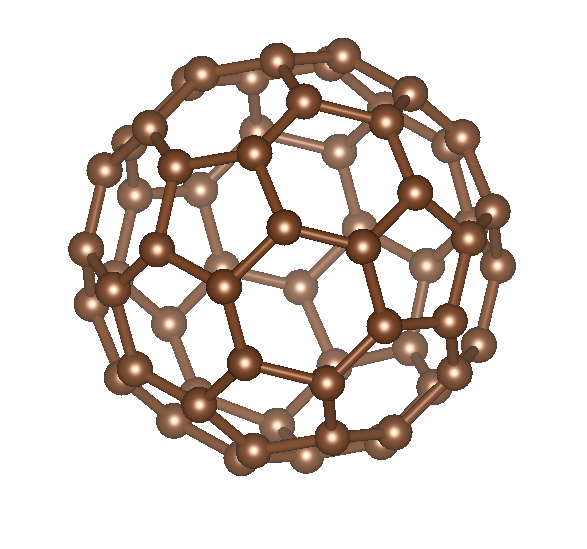
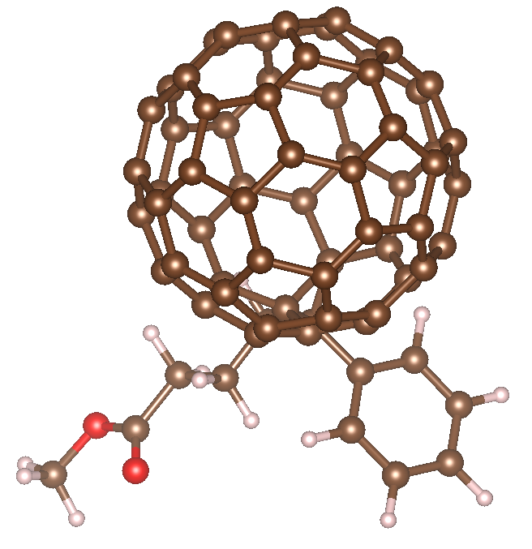
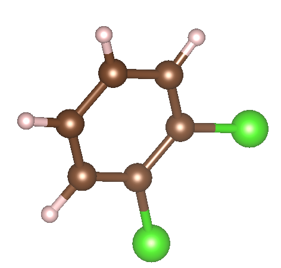
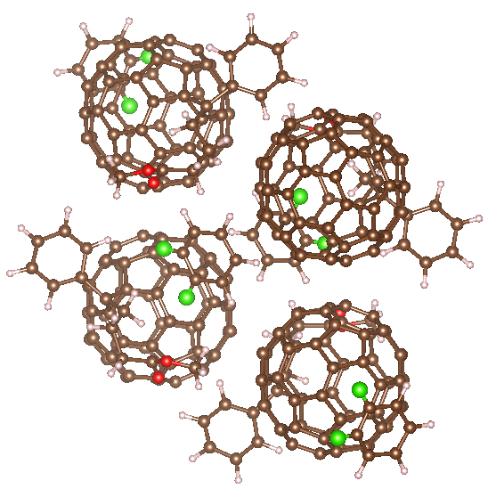
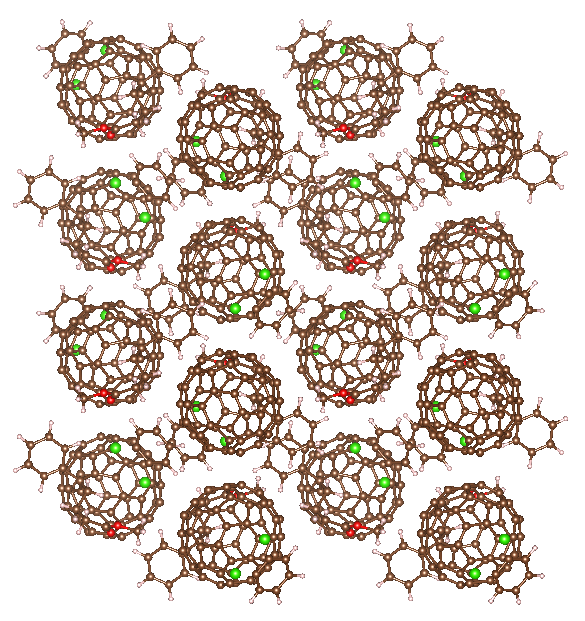

Jason Larkin's PhD Projects
Origin of the Exceptionally Low Thermal Conductivity of Fullerene Derivative PCBM Films (in progress)
Building on the work and analysis in the projects: Predicting Alloy Vibrational Mode Properties using Lattice Dynamics Calculations, Molecular Dynamics Simulations, and the Virtual Crystal Approximation, and Vibrational Mean Free Paths and Thermal Conductivity Accumulation Functions for Amorphous Materials, we studied the thermal conductivity of fullerene-derivative PCBM thin films. The motivation for this study are the recent measurements by Duda et al. that show PCBM have the lowest thermal conductivity of a fully-dense solid. +  + 
 